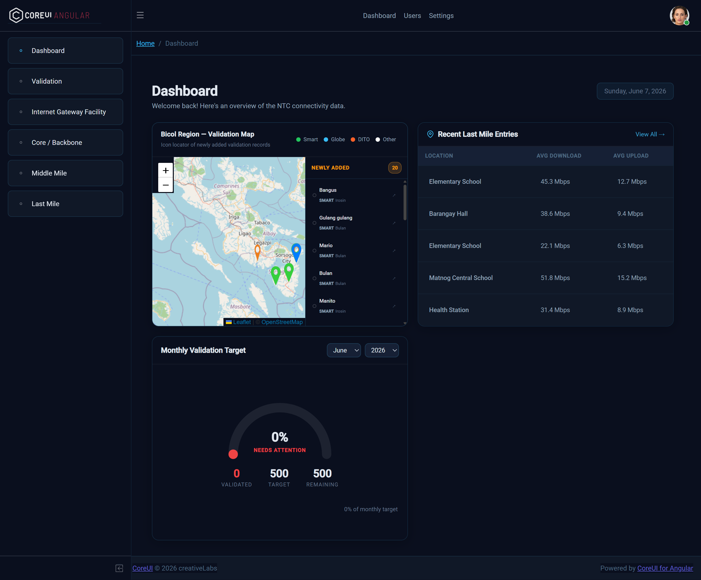
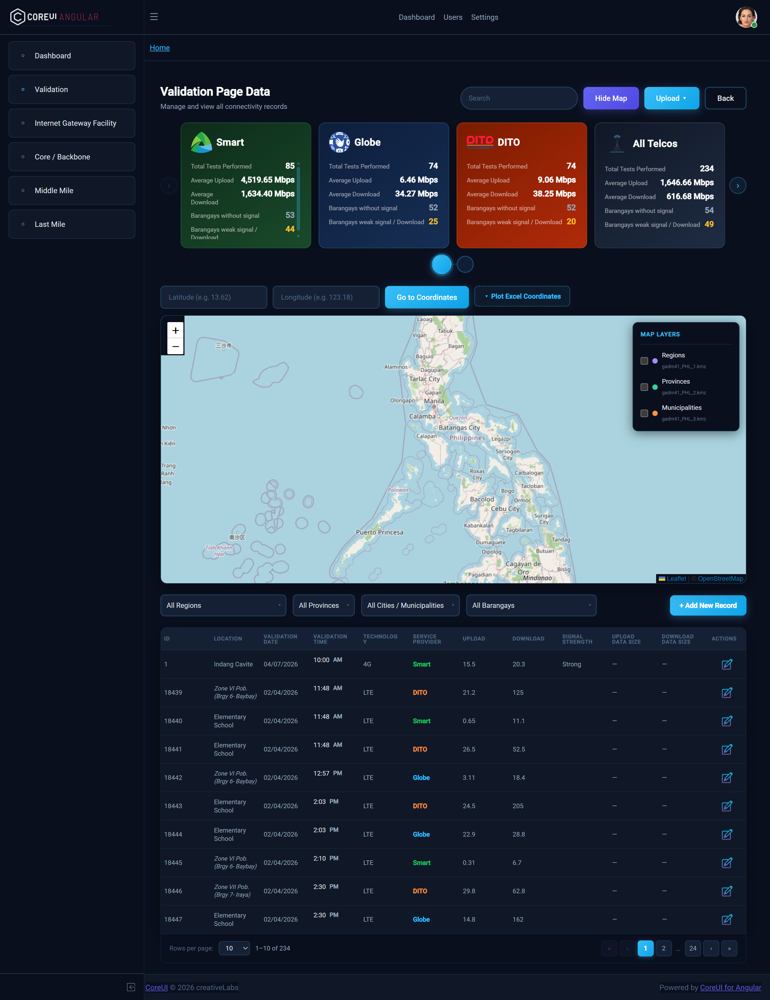
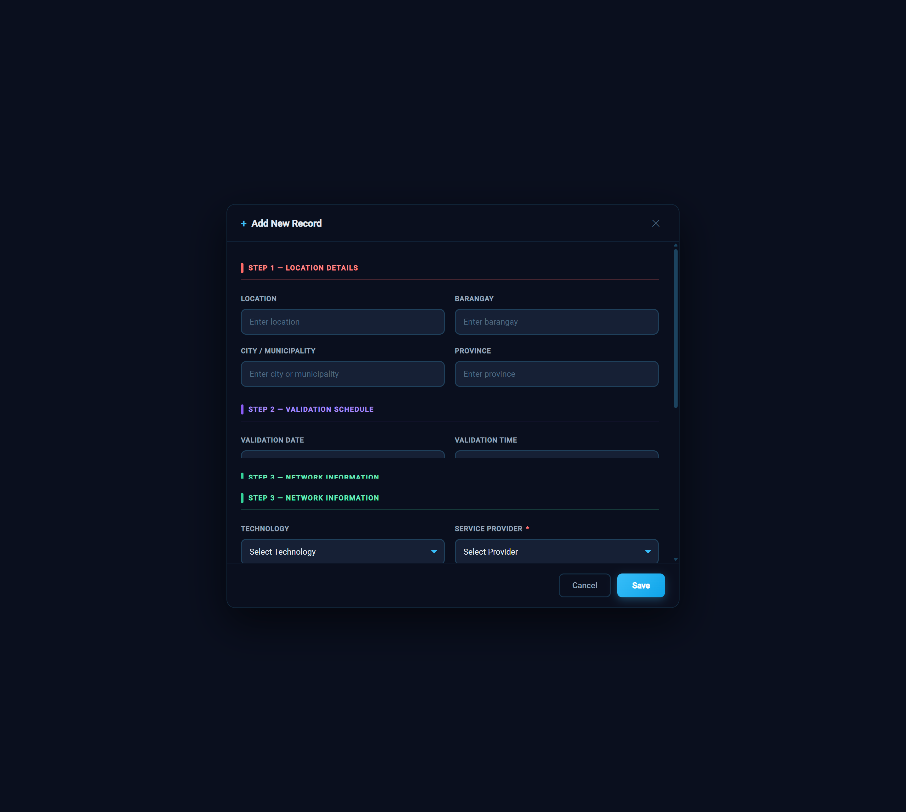
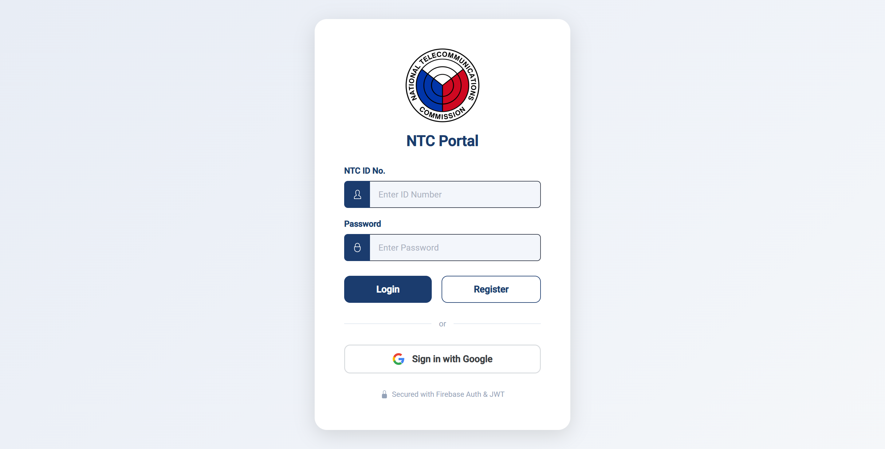
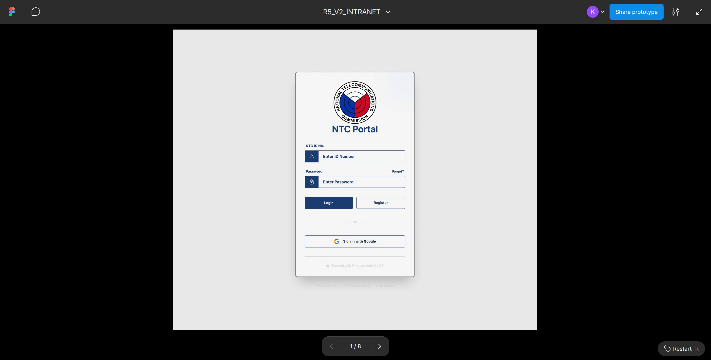

A full-scale enterprise intranet system developed during my internship at NTC Region V. It serves as the primary internal platform for staff — enabling file monitoring, regional data tracking, and administrative workflows across the Bicol region.
Gallery





Overview
The R5 V2 Intranet System is a redesigned and improved version of the NTC Region V's internal web platform. Built to replace the legacy system with a more scalable, modern, and user-friendly interface that meets the day-to-day needs of NTC Region V employees.
The system aggregates data across multiple network infrastructure datasets, provides administrative dashboards, and allows management of personnel records and regulatory submissions — all in one centralized platform.
Key Features
Development Process
Requirements & Research
Gathered requirements from NTC supervisors, reviewed the legacy system, and identified pain points in the existing workflow.
UI Design in Figma
Created wireframes and high-fidelity mockups in Figma. Established a consistent dark-themed design system with clear component hierarchy.
Frontend Development (Angular)
Built modular Angular components, implemented routing, integrated Chart.js for data visualization, and connected to the REST API.
Backend Development (FastAPI)
Developed RESTful endpoints in Python FastAPI, set up MySQL database schema, and implemented JWT-based authentication.
Testing & Deployment
Conducted UAT with NTC staff, fixed reported bugs, and deployed the system on the internal server infrastructure.